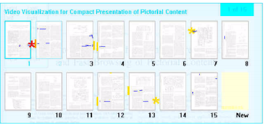

Table of Contents
How To Read Effectively
Teaching myself and making an algorithm to assist me in reading effectively. I have not done it much up to this point, so it's okay to fail / be slow!
- Use the NLTK tutorial for now and then follow another book / lecture.
- Make skimming and understanding the book faster, define the “forest” quicker. Try to “bullet-ize” a text. Split on a good set of transition words.
- Check out other courses. OCW.... Project/resource list
- Companies: IHS Goldfire and Saffron Technologies (acquired by Intel)
Video Playback and Annotation
Mozilla HTML5 video documentation, YouTube API. Listen on Repeat is nice, but you can't send a link to a repeat?!?!
=== Sublime Video === (no adjustable playback speed)
Youtube base API
Looks good so far. However, how to add support for variable speed playback?
Markup
I really like Mortimer Adler's suggestions in How To Mark A Book. Underline major statements. Vertical lines at margins for details.
And some lines and arrows to connect the main ideas together in one big mind map.
From Notebook
- Reorganize text into outline form based around an idea or subject and remove all extra words like pronouns (it, she/he, they)
- Encourage user to summarize section as they read, and dim/hide original text to speed up visual searching
- Selecting text should provide the option to search before it and show quick preview (“Figure 5.1a” should provide option for visual preview of earliest “Figure 5.1a” or closest “Fig. 5.1” mention)
- Have I already read/understood this information before? Allow for retraining if it gets it wrong
- Are there any similar / more authoritative works on this topic?
- What knowledge does this work depend on and have I understood it already?
- When is the author providing more statements than are necessary for understanding? (rambling)
- What justification is the author providing? (label it an anecdote, reference to study)
- Is it true? Are there any counter-arguments to these statements? (fact-checking)
Random
10/21/15 Notes from Deep Learning Talk
Word embeddings, word2vec
Look up CoreNLP (the Stanford group)
Deep learning works really well for fuzzy definitions that are hard to pin down in normal ways.
Figure out what you want to do first!
- You can always ask a PhD student (like Gensim guy) what is possible with algorithms
n-grams allow you to capture the nearby context of the word. E. Coli would be one n-gram instead of separate words.
Business
- “We have gamers to thank for cheap GPU's. Millions of gamers = big market to pay engineers well.
- Default before was $100,000 for drop in FPGA cards for genome matching. Now $500 PCI many-core (GPU or Intel) card = 2000's supercomputer
Word2Vec
- Do word2vec with dropouts
- Skip-gram is good for infrequent words.
- CBOW
- Antonyms can show up nearby as well, might not be what you want.
arxiv.org, he checks it weekly! Is there a way to get to know the *good papers* from there? Federated wiki might allow you to make meta-notes, instead of assuming commenting allowed on that website.
Uses word embedding space to do deep learning on. But it's only using 1 word, why not n-gram?
Read Yav Goldberg natural language processing paper, best overview paper in his opinion.
doc2vec, sentence2vec
Other notes
Hypothes.is seems like most similar project. Another is PeerLibrary.
- List of projects in this space: https://github.com/peerlibrary/peerlibrary/wiki/Related-Projects.
- PDF.js is really slow for me. Do image previews instead?? Probably a lot of bandwidth, more than just viewing the PDF in javascript
Xlibris is the best one I've seen yet. Main site, and they did great investigation in how to customize best for legal research. 
{kind=link}
Liquid Software guy based on Engelbart's work. His Author app more to come on his twitter in November 2014 has a lot of similar features, but it should be on the web! (not just OS X). Also, did an excellent Engelbart documentary.
Draft is another similar thing to this project, but not that similar.
Storage Format
EPUB
Support for Table of Contents arguably not necessary as we will auto-generate it from the text
Active Reading Assistant
Like most of the other research tools out there, except hopefully easier/better.
Assist with de-constructing a book into its “skeleton”/outline format, assisted with your notes and observations. And…maybe even improved with other people's advice.
j/k = up/down = scroll up and down to next sentence h = left = zoom out to next biggest outline l = right = zoom in to think about idea more. Open area on right more?
- Implementation…I like sidebar manager on Bootstrap
- Yes, very similar to workflowy.
e = del = archive sentence (unnecessary detail). make it gray at next to bottom zoom level. Hide it at higher levels.
Coloring
Already read sentences dim slightly
Text highlighting
- Would be nice to automatically highlight/mark sentences as “main idea”, and others as necessary (type of supporting evidence, etc)
Good
- Copy paste text in HTML/rich text format. Automatically determines headings.
- DONE! At least in Chrome well. IE sorta, Firefox not at all? and JQuery.
- “What do you want to learn about?”, then only show previews of books that are relevant to that query. Jump out to Google Books if necessary as books seem better than the web right now.
Think about more
Force summaries to check understanding?
- You should “get hints” only when you run out of ideas and need help –> Link to out-of-print book on thinking, also Tom Conerly said that too for practicing TopCoder problems.
Resources
- Calibre
- Cleans up input text data (attempts to remove repeated headings and page numbers from OCR)
- Can it detect images?
- Google Style folks recommend not using Javascript and instead specify transitions in CSS. here
Sidebar
- Fancy OpenGL Formula Grapher guy's toolkit.
- Make it visual and moving and play-around-able!
Recognizing Hand-Drawn Shapes
- SMART board and MyScript guys have shape drawing support out of the box.
- Multi-touch Interaction: http://interactjs.io/
- CMU CoDe lab guy: Gabe Johnson. Overview paper of the field is excellent, as well as probably his thesis. YouTube Link! https://www.youtube.com/watch?v=6syodydGK1Q
- Startup is Zotebook (dimensional analysis and optimization, sketch recognition) and advisor was mark gross.
GET RID OF SEARCHING FOR MENU OPTIONS. SEARCH FOR THE COMMAND, PRESS THE MOUSE, '?' for KEYBOARD HINTS,etc.
Others
“Document Management Service”, NetDocuments.
- Supports backup and full text search, including ”Search across cabinets or the entire repository with full text enterprise search, including search analysis, metadata, phrase, and proximity searching that supports Boolean operators, lemmatization, and spell checking.“
Paste Buffer
Paste buffer in Firefox/Chrome should use Web Events paste and access Clipboard. Cross-browser example in Pasteboard (but only does images, and doesn't work in IE?).
IE and Chrome work well enough with test file in project. Firefox, something isn't firing right.
NLTK Book
NLTK Book
Chapter 0
They choose to balance theory and practice.
After completing these materials, then students will be ready to attempt one of the more advanced textbooks, such as Speech and Language Processing by Jurafsky and Martin
- Interesting. They advocate a high-level overview first too!
People Resources
- Microsoft Research (MSR) guy: https://sites.google.com/site/xiaoxin/ (particularly fact checking it seems)
- Google guy: http://www.sravi.org/
Parts of Arguments
- Sourced from UPitt Argument Basics. However, they say that it's NOT based on logic primarily. Hmmm…I want to see a deductive/inductive argument too.
| Name | Example | Tip-off |
|---|---|---|
| Claim | The moon is made of cheese | is/was |
| Reason | Because | |
| Support | ||
| Warrant |
- Key statement:
Therefore, the moon is made of cheese.- Trigger words
Implementation
Stuff about synonym tables, stemming, etc. Sounds cool, not sure what they mean quite yet
- One option is Ubuntu Recoll and Tropes for more semantic understanding…Windows only though.
- Apache Lucene/Solr might be really helpful for a commercial implementation.
- It'd be really nice to search within a specific category of information (only within disciplines, or with all background information / lots of links, etc)
Solr LucidWorks Fusion Notes
Incoporate OpenNLP for named entity recognition (people, places, companies). Probably also “he, it, she”, etc.
Lucene has “More like this” functionality
Also, “SpanQuery”, only return the part of document that is relevant
BoostingTermQuery changes weights of terms in query
Caching common searches and showing the “right document” as best result is a nice hack.
Teaching a Computer
recognizes logic, reasoning, fallacies of logic, presents a contrasting view. “Semantic ” ?
Style of Writing
It'd be nice to figure out what makes a good explanation and make sure that you read books with good explanations first.
- Maybe check out Einstein and 's intro to physics book? I also like Lyons' DSP book, but maybe it's too simple.
- Information Retrieval, particularly with fact checking and material understanding. Free Recommended IR Book
- Automatedly find out facts and explanations of things, particularly from textbooks.
- WebMD isn't so great because they just give you the dumbed-down instructions to follow. Why should I wash for 20 seconds? Where are the most important places for me to wash? Someone that knows what they're talking about is here, but doesn't explain the counter-intuitive scientific background.
- Maybe there is a heuristic like how many times they say “because”, “as”, “therefore”, or something. Conclusion statements.
- “From first principles”, “lucid”, Calculus, An Intuitive and Physical Approach
- Quora: How Can ML help solve problems in Journalism?, great summary of recent advances and the vision of the field. Really makes me want to do a PhD on it or work for Google
 .
. - Another view: “nothing will really change unless we value citing reputable sources over sensational journalism” <and teach people how to read critically>.
- If you want to work on it more, here's a few classes. Google it! Theoretical and more practical/hands-on Stanford CS276 and a Wikipedia article: http://en.wikipedia.org/wiki/Automatic_summarization
- I want to be able to do syntopical reading and have the computer help me do that. “What does the Bible think about dating” and have it come up with the superclasses and synonyms of dating and provide all the relevant passages associated with it.
Comments on the Internet
TLDR: Find a person you can trust and email them / search their blog or wiki directly :)
- Most “free” reviews on the web are pretty bad, even though they are upvoted. Therefore those that know the subject well are disincentivized because they fear no return (upvotes) for their work!
- Ehhh. As long as you write a TLDR at the top, people that want the conclusion get it right away, whereas those that want more information, get it as well!
Smart Search Engine
- A search engine that lets you dial up the difficulty if you want, search within a specific category, search for a specific sentiment.
Sentiment Analysis
Train using Amazon reviews and the stars given. More tips on edge cases by pulling from Google papers and patents. It would be helpful to search the Google search results for Brian Klemmer (and other life coaches like him) and understand dissenting opinions and facts.
Extract Keywords from Text
- Important for “Find Similar Pages”
- Count word occurrence of popular words to develop a category for them?